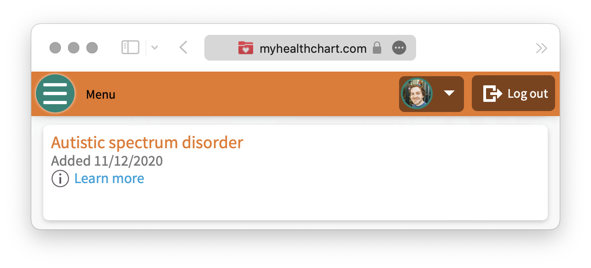

This is a more complete version of a comment I left on Hacker News. I recommend reading the subject article by C.L. Lynch, "Autism is a Spectrum" Doesn't Mean What You Think.
I have autism. If you know me, that might surprise you. I appear neurotypical. I have a career, a marriage, and a social life. I like playing video games and fighting climate change. I don't need support from others on a daily basis.
And yet my psychologist, with 30 years of experience and a Ph.D. in clinical psychology, wrote it right there on my medical chart:
Autism spectrum disorder
This is because behind the scenes, there's a "me" hardly anyone sees. It's the me who can be paralyzed by a text message, whose day is ruined if teeth-brushing and showering happen out of order, and who spends ~an hour a day performing internal conversation planning and retrospectives. It's the me who was mute for nine years.
It's also the me who was taught that all these qualities are just character flaws that can be willed away.
You'd never notice that me, because I hide him well. Of the folks with autism, I'm not an outlier in doing that. In fact, 2% of all human beings have autism [1]. Statistically, you've certainly met several of them without realizing it. Why is that, and what is it like to live that life?
The Infamous Spectrum
We've all heard "autism is a spectrum". But that word, "spectrum", in that context, has had its meaning lost to time. Often people think of folks with autism as "high functioning" or "low functioning", as if these are positions on the spectrum. But a spectrum is not a scale. This is how to actually think about the autism spectrum:
There is no "more" or "less"; no "high" or "low". There is only "different". And yet people often still feel they know it when they see it; that people with autism either act like Rain Man or don't, and that those are the two (if even that many) types of autism.
What, really, is this subset of autism people think they can identify at a glance?
The Canary Symptom
Autism symptoms are a deck of cards, and not all folks are dealt the same hand. Of the many, the DSM-5 calls out a few examples:
Deficits in developing, maintaining, and understand [sic] relationships, ranging, for example, from difficulties adjusting behavior to suit various social contexts; to difficulties in sharing imaginative play or in making friends; to absence of interest in peers.
DSM-5
Pay special attention to that first example, which I'll paraphrase as "inability to change behavior based on social feedback". We'll come back to that later.
A Personal Example
One symptom I got dealt in my autism hand is a hearing hypersensitivity. As cool as it sounds, this is no superpower. My body's defense systems will sometimes malfunction and miscalibrate incoming volume.
Imagine you're in a coffee shop reading a book when someone walks up to you, takes out an air horn, points it in your ear and briefly squeezes the trigger. What would your brain and body do instinctively? Would it startle, flinch, recoil? What if the person didn't go away, and kept squeezing the trigger randomly every few seconds? What if you looked around and slowly realized in horror that everyone else had their own air horn and they have all started doing the same?
Your instinctive responses escalate to stress, panic, confusion. You keep trying to read your book but the air horns keep sounding and your body keeps flinching. You can't concentrate; your eyes are moving over the words in your book but you're not understanding them. You start getting annoyed at all the people wielding air horns—could they just not?! I'm trying to read!
This is a hearing hypersensitivity. At random times, my brain will think every little sound is as loud as an air horn and it will execute all these physiological responses involuntarily. Even when I know it's a malfunction—which took me 30 years to learn—it's still just as hard as ever to get through a paragraph in that book, to not flinch, to not become stressed, to not panic. Even when I can rationally tell myself in the moment It's all in your head, it doesn't stop the involuntary response.
You may understand then why I and many other people with autism would, as children, collapse to the floor in public, cover their ears, and scream.
Killing the Canary
In many ways, I'm one of the lucky ones. I didn't get dealt that "inability to change behavior based on social feedback" symptom, above. So when as a child I collapsed to the floor and screamed, and other people looked at me like I was losing it (reminder: I was) I can log that detail away, and work a little more towards avoiding it next time. I've iterated on this quite a bit over 30 years:
- On the floor screaming
- Ears covered, eyes shut, silent
- On the floor cross-legged, teeth gritted, trying to dissociate
- Fingers-in-ears, screaming interally
- Inventing excuses to stay home
- Going home
My actions are more socially acceptable now, but the sensation is the same. During a hearing hypersensitivity, inside I'm still that kid rolling on the floor screaming. The only difference is that I have learned to fake it away.
When the Canary Lives
People dealt the "inability to change behavior based on social feedback" card get stuck on the rolling-on-the-floor-screaming phase. This, perhaps, is what the world thinks autism "looks like"; the canary symptom that reveals the rest.
The people with this symptom, who commit the cardinal sin of simply not faking it, often need more support because our world is not built to accomodate them or understand them well. But they are not any more "low-functioning" than I am "high-functioning". Those words are descriptions of how observers experience autism, not how autism-havers do. That's why those terms have fallen out of use since the DSM-5.
Masking
This ability to fake not having autism is called masking. Those of us who can mask—those without the canary symptom—mask in virtually every social situation.
This is not a temporary "get to know me and I'll stop masking" deal; I mask in front of my mom, and Summer, and even my psychologist. It's like an emulation layer that sits on top of my brain so I can run programs that let me communicate with others, programs like "talking" and "facial expressions" and "not losing it".
It's not that I feel forced to do these things. I am a human being, so I crave social interaction. I love my friends and family and I enjoy interacting with them, and this is how I have to do it. I just wish we ran the same architecture, because masking is exhausting [2]. My brain overclocks itself just running this emulation layer. It reallocates important resources from other programs like reason and problem-solving. I literally become dumber when I am with others.
For these reasons, people with autism generally agree the best part of every day is "unmasking", which I'd equate to the feeling of getting home from a long trip and flopping down on your own bed. Masking is a great tool and being able to use it is a blessing, but it means every day takes an extra toll.
Flying Under the Radar
One risk of masking is going your whole life undiagnosed. You don't have to know you're masking to mask. Historically most autism diagnoses are in children, which is no coincidence—if you happen to slip past childhood without a diagnosis, chances are good that you're old enough to have learned masking, which can hide your autism forever. I narrowly avoided this fate. I missed diagnosis during my childhood window and it was 30 years until my eventual adult diagnosis, which happened more by chance than anything.
It sounds silly in retrospect to spend so much effort masking and dealing with other issues without realizing that other people don't, but it's difficult to identify atypicality when you've only ever piloted one brain.
The Rough Self-Check
Medical help is the best way to find answers. But in the real world not everybody has access to it due to things like family, income, benefits, or location. It's therefore common to find people in the autism community who identify as self-diagnosed; they are pretty sure they have some form of autism based on how well others' stories resonate with them, but they're either unwilling or unable to confirm that with a medical professional.
Even for those who are willing and able, going from ignorance to "Oh! That happens to me too!" is often the kick-start needed to seek professional attention. Therefore I present for your benefit a small list of non-professional, non-medical autism indicators that may warrant, at minimum, further investigation:
- Occasional or constant annoyance at typically unannoying things like touch, light, or sound (sensory hypersensitivies)
- More than your peers, a need to dig into what people say by asking clarifying questions (difficulty dealing with ambiguity)
- Eliminating all facial expression when exiting a room (masking)
- More confusion about social conventions than your peers
If these resonate with you, consider it a starting point to slingshot yourself into more research and, if available to you, seek a professional.
More People than You Think
Two percent of people have autism. There is no "high-functioning" or "low-functioning" autism, because autism is a deck of cards full of symptoms, and each hand is different. One possible symptom is a canary that reveals the others, but not everybody has this symptom. For those who don't, there is a different set of challenges, often had in private and unfortunately, often taken to the grave.
Be open about your own brain: what does it do well? What does it do poorly? Like sharing salary information, we can't know what our situation is until we normalize talking about it.
Because really, truly, the best part of my autism journey was just finding out.
